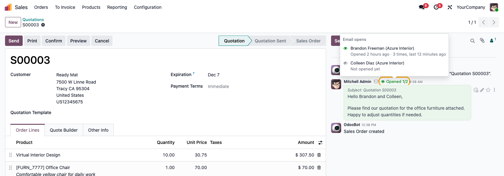
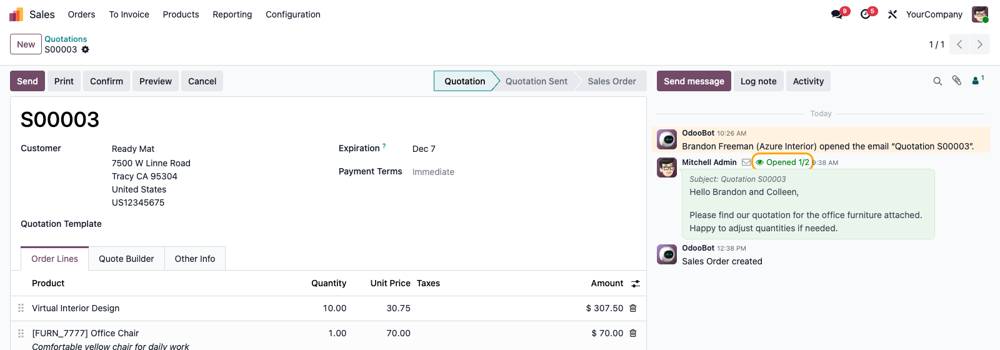
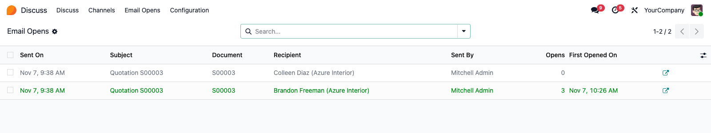
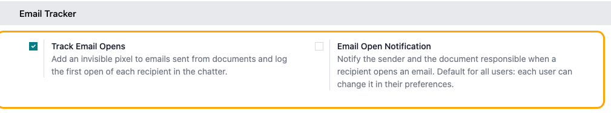
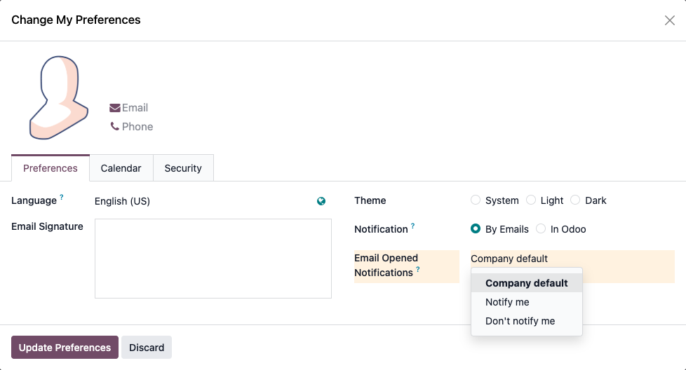

Leofren Technologies · Email & Communication
Email Tracker tells you when a customer, vendor or applicant opens an email you sent from Odoo. Every sent email gets an Opened badge right in the chatter, the first open is logged on the document, and the sender is notified — on quotations, invoices, leads, purchase orders, tickets and any other document with a chatter.

Click the badge on any sent email to see who opened it, when, and how often — and who hasn't yet.
Install it and keep sending emails the way you already do. Nothing to set up per app.
Use Send message, the Send button of a quotation or invoice, or any automated email. Each external recipient gets their own invisible tracking image — your colleagues never do.

The badge turns to Opened (live for the sender), and the first open is logged on the document: “Brandon Freeman (Azure Interior) opened the email”. The sender and the document's responsible are notified once — later opens only update the count.

Discuss → Email Opens lists every tracked email with its recipient, opens and dates. Filter on Not Opened to see who still needs a call. Each user sees the emails they sent and the documents they are responsible for.
Generic by design: it works across Odoo, not just in Sales.
Sales, Invoicing, CRM, Purchase, Helpdesk, Recruitment, Projects and your own custom models — no per-app setup.
Send one email to three contacts and see exactly which of them opened it, when, and how many times.
Opened, Opened 1/2 or Not opened next to every sent email, updated live for the sender. Visible to internal users only.
Only the first open of each recipient is logged. Re-opens and image proxies just update the counter.
Set the company default in Settings; each user can choose Notify me or Don't notify me in their preferences.
Template emails and automated actions are tracked, even when Odoo deletes the sent mail afterwards.
When a customer replies and quotes your email, reading the reply in Odoo is never counted as the customer opening it.
Mass mailings keep their own statistics — Email Tracker stays out of them, so contacts are never flooded with notes.
General Settings → Email Tracker

My Preferences

Open tracking relies on the recipient's mail app loading images. Good to know before you rely on it.
Apple's Mail Privacy Protection loads every image when the email arrives, so those emails can show as opened even if they weren't read yet. This affects every email tracking tool.
If a recipient blocks images, the email can be read without an open being recorded. Not opened means “not seen yet”, not “never read”.
Opens are stored in your own database only — no third-party service. Tracking can be switched off at any time in Settings.
Email open tracking is personal data in the EU. Mention it in your privacy policy, as you would for any newsletter tool.
Emails sent from a document's chatter to people outside your company — customers, vendors, applicants, portal users or plain email addresses — in any app. Internal users are never tracked, and neither are emails that aren't linked to a document (password resets, invitations…).
No — opens from a browser where you are logged in to Odoo as an internal user are ignored on purpose, so reading a customer's reply (which quotes your email) never counts as the customer opening it. To test, send an email to an address of your own and open it in your mail app, or use a private window.
Yes. Email Marketing and Marketing Automation already track their own opens and clicks, so Email Tracker leaves those emails untouched.
The user who sent the email and the document's responsible (salesperson, assigned user…), once per recipient. The company default is set in Settings, and each user can override it in their preferences.
Yes — it works with both Odoo Enterprise (on-premise and Odoo.sh) and Community. Odoo Online (cloud) does not allow installing third-party apps, so this module can't be installed there.
Yes, get in touch and we'll scope a customization for your use case.
Email Tracker is free to install. Reach out any time and we'll help you get set up.
contact@leofren.com